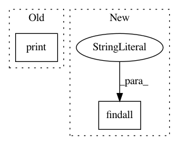

33db6196686e2966e2f74bcabc89800a6cb701b6,scripts/prove.py,,main,#Any#,31
Before Change
doc = etree.parse(args.sem, parser)
inference_result, coq_scripts = prove_doc(doc, abduction)
print(inference_result, file=sys.stdout)
if args.graph_out:
html_str = convert_doc_to_mathml(doc, coq_scripts, args.gold_trees)
with codecs.open(args.graph_out, "w", "utf-8") as fout:
After Change
// with codecs.open(args.graph_out, "w", "utf-8") as fout:
// fout.write(html_str)
DOCS = root.findall(".//document")
// from pudb import set_trace; set_trace()
document_inds = range(len(DOCS))
proof_nodes = prove_docs(document_inds, args.ncores)
assert len(proof_nodes) == len(DOCS), \
In pattern: SUPERPATTERN
Frequency: 4
Non-data size: 2
Instances
Project Name: mynlp/ccg2lambda
Commit Name: 33db6196686e2966e2f74bcabc89800a6cb701b6
Time: 2017-05-31
Author: pascual@nii.ac.jp
File Name: scripts/prove.py
Class Name:
Method Name: main
Project Name: unitedstates/congress-legislators
Commit Name: e3b370606f2372227e63e82544917c0d65a73a25
Time: 2016-03-05
Author: jconline@gmail.com
File Name: scripts/house_contacts.py
Class Name:
Method Name: run
Project Name: acl-org/acl-anthology
Commit Name: e17e429183b6cffaf25a525ceb9834c5da86d7f2
Time: 2020-07-03
Author: post@cs.jhu.edu
File Name: bin/ingest.py
Class Name:
Method Name: main
Project Name: okfn-brasil/serenata-de-amor
Commit Name: f799eeaec115d17693f99c6e02d3bb0eac3feaa9
Time: 2016-11-09
Author: schwendler@gmail.com
File Name: src/search_suspect_places.py
Class Name:
Method Name: write_suspicious_info